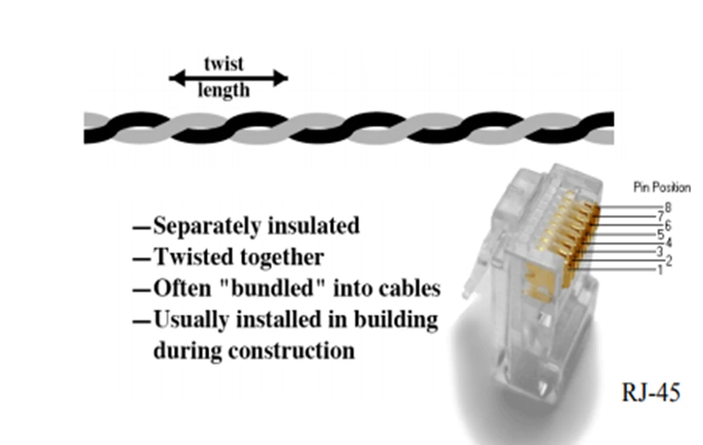

Disclaimer: The content provided in this article has been given by the faculty for educational purposes. dmj.one does not verify the originality or legal standing of the material. If you believe that content shared on dmj.one violates your intellectual property rights, please contact us (message button on the right side) immediately for review and resolution. We will investigate and take appropriate action, including content removal if necessary.
PDF Version
History and Overview
Data transmission (also data communication or digital communications) is the transfer of data (a digital bit-stream or a digitized analog signal) over a point-to-point or point-to-multi-point communication channel.
Examples of such channels are copper wire, optical fibers, wireless communication channels, storage media, and computer buses.
The data are represented as an electromagnetic signal, such as an electrical voltage, radio wave, microwave, or infrared signal.
Data Communication
Computer network is a digital telecommunications network which allows nodes to share resources.
In computer networks, computing devices exchange data with each other using connections (data links) between nodes.
Data links are established over cable media such as wires or fiber optic cables, or wireless media such as Wi-Fi.
Data Communication and Computer Network
Data communications refers to the transmission of digital data between two or more computers, and a computer network or data network is a telecommunications network that allows computers to exchange data.
The physical connection between networked computing devices is established using either cable media or wireless media.
The best-known computer network is the Internet.
Figure: Image Taken from Faculty Lecture PPT. All copyrights reserved with source owner. Contact us if you want to have this image removed.
Network Applications
Computer systems and peripherals are connected to form a network. They provide numerous advantages:
Resource sharing such as printers and storage devices
Exchange of information by means of e-Mails and FTP
Information sharing by using Web or Internet
Interaction with other users using dynamic web pages
IP phones
Video conferences
Parallel computing
Instant messaging
How Many Kinds of Networks?
Depending on one's perspective, we can classify networks in different ways:
Based on network size: LAN and WAN (and MAN)
Based on transmission media: Wired (UTP, coaxial cables, fiber-optic cables) and Wireless
Based on management method: Peer-to-peer and Client/Server
Based on topology (connectivity): Bus, Star, Ring, etc.
Based on Geographical Span (Network Size)
Generally, networks are distinguished based on their geographical span (network size). A network can be as small as the distance between your mobile phone and its Bluetooth headphone and as large as the internet itself, covering the whole geographical world.
Personal Area Network (PAN) is the smallest network, which is very personal to a user. This may include Bluetooth-enabled devices or infra-red enabled devices.
Local Area Network (LAN) A computer network spanned inside a building and operated under a single administrative system. Usually, LAN covers an organization's offices, schools, colleges, or universities.
Metropolitan Area Network (MAN)
The Metropolitan Area Network (MAN) generally expands throughout a city, such as a cable TV network. It can be in the form of Ethernet, Token-ring, ATM, or Fiber Distributed Data Interface (FDDI).
Metro Ethernet is a service provided by ISPs. This service enables its users to expand their Local Area Networks. For example, MAN can help an organization connect all of its offices in a city.
The backbone of MAN is high-capacity and high-speed fiber optics. MAN works between Local Area Network and Wide Area Network. MAN provides uplink for LANs to WANs or the internet.
Wide Area Network (WAN)
Wide Area Network (WAN) covers a wide area, which may span across provinces and even a whole country. Generally, telecommunication networks are Wide Area Networks. These networks provide connectivity to MANs and LANs.
Since they are equipped with a very high-speed backbone, WANs use very expensive network equipment.
WAN may use advanced technologies such as Asynchronous Transfer Mode (ATM), Frame Relay, and Synchronous Optical Network (SONET).
WAN may be managed by multiple administrations.
Based on Transmission Media
Two main categories:
Guided ― wires, cables
Unguided ― wireless transmission, e.g., radio, microwave, infrared, sound, solar
We will concentrate on guided media here:
Twisted-Pair cables:
Unshielded Twisted-Pair (UTP) cables
Shielded Twisted-Pair (STP) cables
Coaxial cables
Fiber-optic cables
Twisted Pair

Figure: Image Taken from Faculty Lecture PPT. All copyrights reserved with source owner. Contact us if you want to have this image removed.
Pros and Cons
Cheap
Easy to work with
Low data rate
Short range
Twisted Pair - Transmission Characteristics
Analog: Amplifiers every 5km to 6km
Digital: Use either analog or digital signals, repeater every 2km or 3km
Limited distance
Limited bandwidth (1MHz)
Limited data rate (100MHz)
Susceptible to interference and noise
Unshielded and Shielded TP
Unshielded Twisted Pair (UTP)
Figure: Image Taken from Faculty Lecture PPT. All copyrights reserved with source owner. Contact us if you want to have this image removed.
Ordinary telephone wire
Cheapest
Easiest to install
Suffers from external Electro-Magnetic interference
Shielded Twisted Pair (STP)
Figure: Image Taken from Faculty Lecture PPT. All copyrights reserved with source owner. Contact us if you want to have this image removed.
Metal braid or sheathing that reduces interference
More expensive
Harder to handle (a bit thicker & heavier)
Straight-through cable (different devices)
Crossover cable (similar devices)
Rollover cable (RJ-45 to DB-9)
Cable Standards
Name
Type
Mbps
Often used by
Category 1
UTP
1
Modem
Category 2
UTP
4
Token Ring-4
Category 3
UTP
10
10Base-T Ethernet
Category 4
STP
16
Token Ring-16
Category 5
UTP
100
100Base-T Ethernet
Category 5
STP
100
100Base-T Ethernet
Category 5e
UTP
100
1000Base-T Ethernet
Category 6
UTP
200
1000Base-T Ethernet
Category 7
STP
600
100GBase-T Ethernet
Coaxial Cable
Figure: Image Taken from Faculty Lecture PPT. All copyrights reserved with source owner. Contact us if you want to have this image removed.
In general, coaxial cables, or coax, carry signals of higher frequencies (100KHz–500MHz) than UTP cables.
Application
Television distribution
Ariel to TV
Cable TV
Long-distance telephone transmission
Can carry 10,000 voice calls simultaneously
Being replaced by fiber optic
Short distance computer systems links
Local area networks
Figure: Image Taken from Faculty Lecture PPT. All copyrights reserved with source owner. Contact us if you want to have this image removed.
Fiber-optic Cables
An optical fiber consists of a core (denser material) and a cladding (less dense material).
Data or information is transmitted as light pulses.
Carries more data for longer distances and much more speed compared to other media.
Requires more protection.
Figure: Image Taken from Faculty Lecture PPT. All copyrights reserved with source owner. Contact us if you want to have this image removed.
Fiber-optic Cables
Benefits:
Greater capacity — Data rates of hundreds of Gbps
Smaller size & weight
Lower attenuation
Electromagnetic isolation
Greater repeater spacing — tens of km
Application
Long-haul trunks
Metropolitan trunks
Rural exchange trunks
Subscriber loops
LANs
Based on Management Method
Network architecture is the design of a computer network. It is a framework for the specification of a network's physical components and their functional organization and configuration, its operational principles and procedures, as well as communication protocols used.
Computer networks can be discriminated into various types such as Client-Server, peer-to-peer, or hybrid, depending upon its architecture.
There can be one or more systems acting as Server (Client Server). Others being Client, request the Server to serve requests. The server takes and processes requests on behalf of Clients.
Two systems can be connected Point-to-Point, or in back-to-back fashion. They both reside at the same level and are called peers.
There can be a hybrid network that involves the network architecture of both the above types.
Based on Topologies
Point-to-point networks contain exactly two hosts such as computers, switches, routers, or servers connected back to back using a single piece of cable.
Bus topology, all devices share a single communication line or cable.
Star topology, all hosts are connected to a central device, known as a hub device, using a point-to-point connection.
Ring topology, each host machine connects to exactly two other machines, creating a circular network structure.
Mesh topology, in this type of topology, a host is connected to one or multiple hosts.
Hardware and Software Components of Networks
Network Interface Card (NIC)
Repeater
Hub
Bridge
Routers
Switch
Modem
Network Interface Cards (NIC)
Figure: Image Taken from Faculty Lecture PPT. All copyrights reserved with source owner. Contact us if you want to have this image removed.
NICs provide the interface between cables and computers.
The cards are installed in an expansion slot in each computer and server on the network.
Roles of NIC
It makes the physical connection to the cable.
Generates the electrical signals that travel over the cable.
The translation of the computer's parallel signals into serial signals that can travel on the network's cables is accomplished by a transceiver (transmitter/receiver).
Connection Hardware
Twisted-pair cabling uses RJ-45 telephone connectors to connect to a computer.
Coaxial cable uses BNC connector.
Distribution racks and rack shelves
Distribution racks and rack shelves can create more room for cables where there isn't much floor space. Using them is a good way to organize a network that has a lot of connections.
Expandable patch panels:
These come in various versions with a transmission speed of up to 100 Mbps.
Modem
Figure: Image Taken from Faculty Lecture PPT. All copyrights reserved with source owner. Contact us if you want to have this image removed.
A modem is a device that makes it possible for computers to communicate over a telephone line.
Modem Converting Digital Signal into Analog and Analog back to Digital.
Hub
Network equipment that connects PCs (devices) together.
It is a simple device that sends all the traffic coming into the hub to all the other ports. This could cause lots of unnecessary traffic flow in the network, causing collisions.
Hubs are suitable for small networks.
It operates on the physical layer (layer 1 of the OSI model).
Hub is not suitable for large networks with lots of traffic.
It broadcasts the traffic coming in without any kind of management.
Switch
Switches are used to connect multiple devices together on the same network. In a properly designed network, LAN switches are responsible for directing and controlling the data flow at the access layer to networked resources.
It can be managed both locally and remotely. To remotely manage a switch, it needs to have an IP address and default gateway configured.
Router
Figure: Image Taken from Faculty Lecture PPT. All copyrights reserved with source owner. Contact us if you want to have this image removed.
A router is a networking device that connects a local network to other local networks. At the Distribution level, routers have many of the same hardware and software components that are found in other computers including:
CPU
RAM
ROM
Operating System
Router Interfaces
Figure: Image Taken from Faculty Lecture PPT. All copyrights reserved with source owner. Contact us if you want to have this image removed.
Ethernet
Fast Ethernet
Serial
DSL
ISDN
Cable
Console
Auxiliary (AUX)
Network Protocols
A network protocol defines rules and conventions for communication between network devices.
Network protocols include mechanisms for devices to identify and make connections with each other, as well as formatting rules that specify how data is packaged into sent and received messages.
Internet Protocols
The Internet Protocol (IP) family contains a set of related (and among the most widely used) network protocols. Besides Internet Protocol itself, higher-level protocols like TCP, UDP, HTTP, and FTP all integrate with IP to provide additional capabilities. Similarly, lower-level Internet Protocols like ARP and ICMP also coexist with IP. In general, higher-level protocols in the IP family interact more closely with applications like web browsers, while lower-level protocols interact with network adapters and other computer hardware.
Wireless Networking Protocols
On the Internet, the set of communications protocols used is called TCP/IP. TCP/IP is actually a collection of various protocols that each have their own special function or purpose.
Examples: 802.11b Protocol, 802.11g Protocol, 802.11a Protocol, etc.
Network Routing Protocols
Routing protocols are special-purpose protocols designed specifically for use by network routers on the internet. A routing protocol can identify other routers, manage the pathways (called routes) between sources and destinations of network messages, and make dynamic routing decisions. Common routing protocols include EIGRP, OSPF, and BGP.